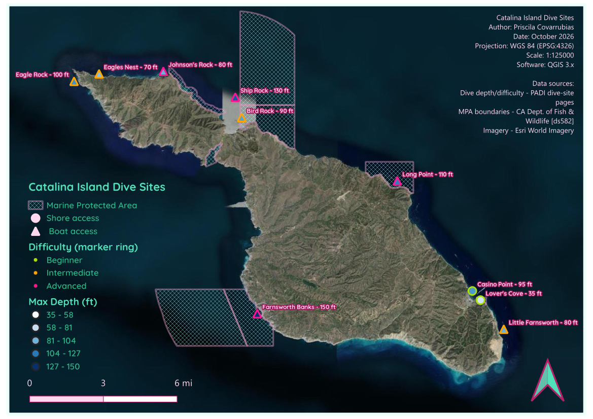

This map accounts for ten of the more popular scuba dive sites around Catalina Island and would be good to use as an informative dive guide. Each site is symbolized by maximum depth (fill color), difficulty/certification level needed (ring color: lime = beginner, orange = intermediate, pink = advanced), and access type (circle = shore dive, triangle = boat dive). California Marine Protected Area boundaries are shown to help plan around regulated zones and indicate that special accomodations may be needed to dive there. As a diver I hope to complete this bucket list of all ten someday!
